한식
한식 양식
양식 중식
중식 일식
일식 분식
분식전라도 주요 맛집 BEST 3
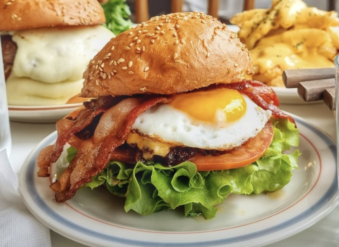
- 키친후가
- 주소 : 전북 군산시 양안로 32 키친후가
- Tel : 0507-1447-1221
- 소개 : 소고기패티, 치킨텐더, 감자튀김, 수프, 각종 소스 등을 수제로 만드는 고퀄리티 수제버거 전문점 입니다. 후가(hygge)는 촛불을켜고 아늑한 곳에서 좋아하는 사람과 좋은 음식을 먹는다. 라는 뜻의 덴마크어로 손님들께 아늑한 시간을 드리고자 노력하고 있어요!
- 네이버맵평점 : 4.54
- 카카오맵평점 : 4.4
- 바로가기
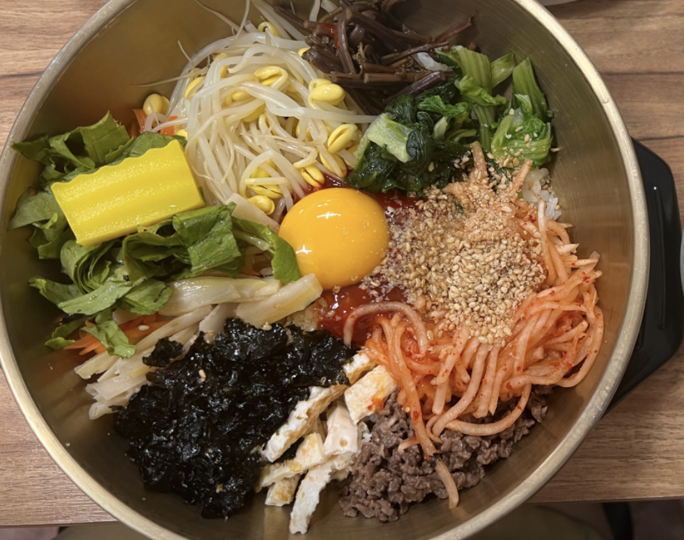
- 풍남문비빔밥
- 주소 : 전북 전주시 완산구 풍남문2길 53 6동 95호,96호
- Tel : 0507-1388-0301
- 소개 : 저희 업소는 매일 신선한 재료만으로 조리하여 제공하고, 반찬을 재사용 하지 않습니다.
- 네이버맵평점 : 4.45
- 카카오맵평점 : 4.8
- 바로가기
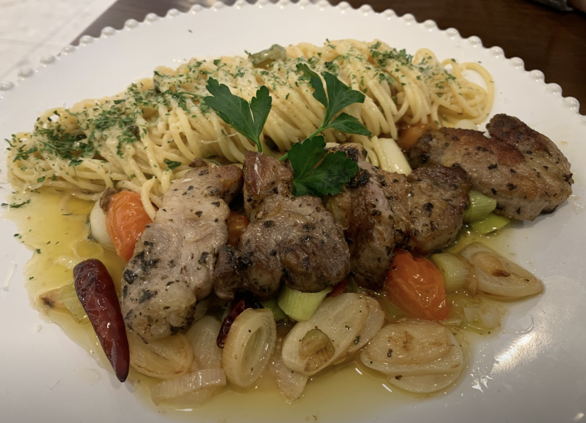
- 라보테
- 주소 : 전북 전주시 덕진구 중동로 104-16 3층 라보테
- Tel : 063-213-3332
- 소개 : 최고의 뷰, 프리미엄 레스토랑 라보테
- 네이버맵평점 : 4.48
- 카카오맵평점 : 4.1
- 바로가기
전라도 주요 한식 맛집
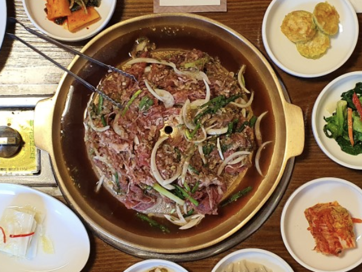
- 호남각
- 주소 : 전북 전주시 덕진구 송천동2가 560-3
- Tel : 0507-1405-8150
- 소개 : 24년 이상의 전통이 있는 전주 최고의 한식당 호남각입니다. 전주의 전통 한옥에서 전주의 맛과 멋을 느끼실수 있습니다.
- 네이버맵평점 : 4.27
- 카카오맵평점 : 3.9
- 바로가기
- 풍남문비빔밥
- 주소 : 전북 전주시 완산구 풍남문2길 53 6동 95호,96호
- Tel : 0507-1388-0301
- 소개 : 저희 업소는 매일 신선한 재료만으로 조리하여 제공하고, 반찬을 재사용 하지 않습니다.
- 네이버맵평점 : 4.45
- 카카오맵평점 : 4.8
- 바로가기
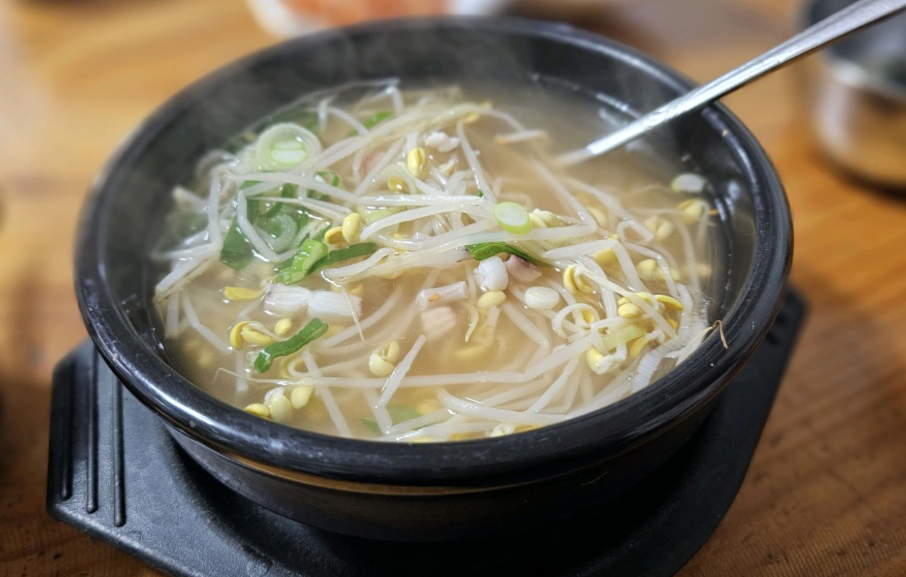
- 전주왱이콩나물국밥전문점
- 주소 : 전북 전주시 완산구 동문길 88
- Tel : 063-287-6980
- 소개 : 정보없음
- 네이버맵평점 : 4.36
- 카카오맵평점 : 3.9
- 바로가기
전라도 주요 양식 맛집
- 라보테
- 주소 : 전북 전주시 덕진구 중동로 104-16 3층 라보테
- Tel : 063-213-3332
- 소개 : 최고의 뷰, 프리미엄 레스토랑 라보테
- 네이버맵평점 : 4.48
- 카카오맵평점 : 4.1
- 바로가기
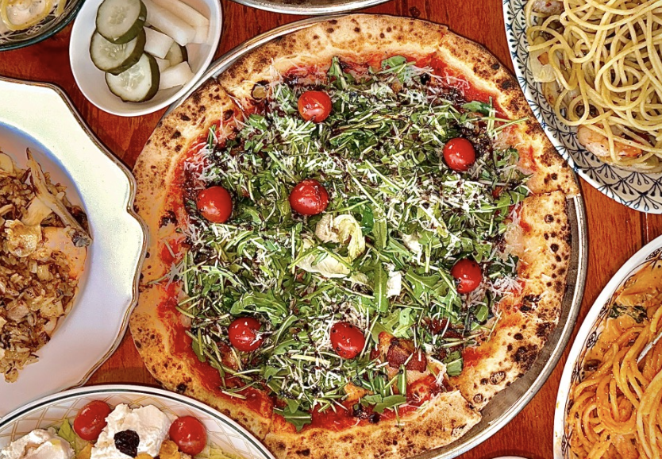
- 가마
- 주소 : 전북 전주시 완산구 전주객사4길 74 2층 가마
- Tel : 0507-1309-8521
- 소개 : 1분만에 구워지는 '겉바속촉'의 정석인 피자. 100% 장작을 태워 순간화력을 이용해 겉바속촉의 식감을 살리는 이태리 전통방법으로 피자를 굽습니다. 속이 편안한 100% 생도우로 만드는 피자. 피자의 풍미를 높이고 소화흡수에 도움이 되게 하기 위해 최소 48시간 저온 숙성 및 100% 수타로 피자를 제작합니다.
- 네이버맵평점 : 4.68
- 카카오맵평점 : 4.0
- 바로가기
- 키친후가
- 주소 : 전북 군산시 양안로 32 키친후가
- Tel : 0507-1447-1221
- 소개 : 소고기패티, 치킨텐더, 감자튀김, 수프, 각종 소스 등을 수제로 만드는 고퀄리티 수제버거 전문점 입니다. 후가(hygge)는 촛불을켜고 아늑한 곳에서 좋아하는 사람과 좋은 음식을 먹는다. 라는 뜻의 덴마크어로 손님들께 아늑한 시간을 드리고자 노력하고 있어요!
- 네이버맵평점 : 4.54
- 카카오맵평점 : 4.4
- 바로가기
전라도 주요 중식 맛집
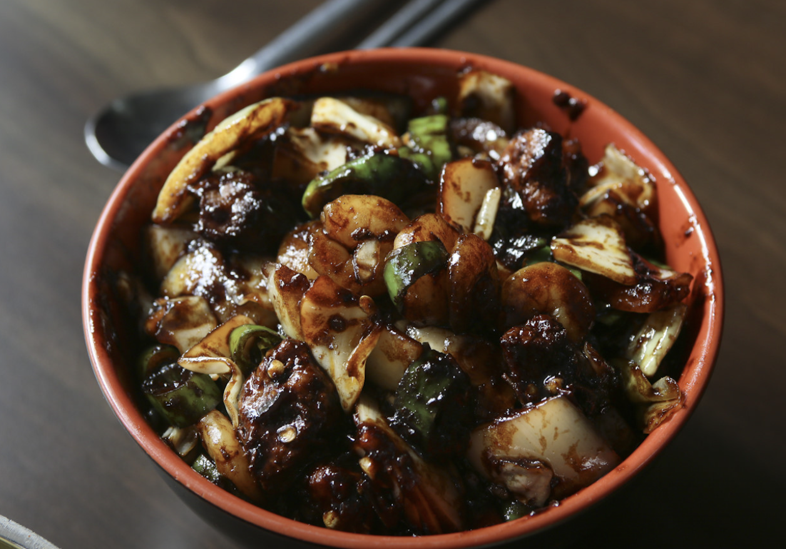
- 지린성
- 주소 : 전북 군산시 미원로 87
- Tel : 0507-1369-2905
- 소개 : 대표메뉴 - 고추짜장
- 네이버맵평점 : 4.28
- 카카오맵평점 : 3.1
- 바로가기
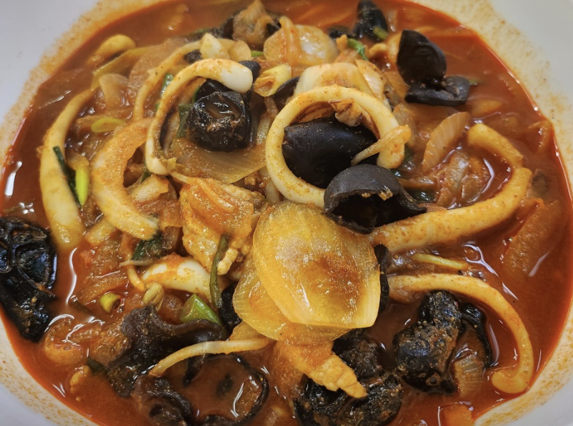
- 양자강
- 주소 : 전북 정읍시 우암로 57 양자강
- Tel : 063-533-4870
- 소개 : 진한 짬뽕과 비빔짬뽕이 인기인 중화요리 전문점입니다. 정읍경찰서 맞은편의 소규모의 식당인데요. 면 위에 오징어, 돼지고기 올려진 자작한 국물의 비빔짬뽕과 개운한 국물의 짬뽕을 많이 찾습니다.
- 네이버맵평점 : 4.31
- 카카오맵평점 : 4.0
- 바로가기
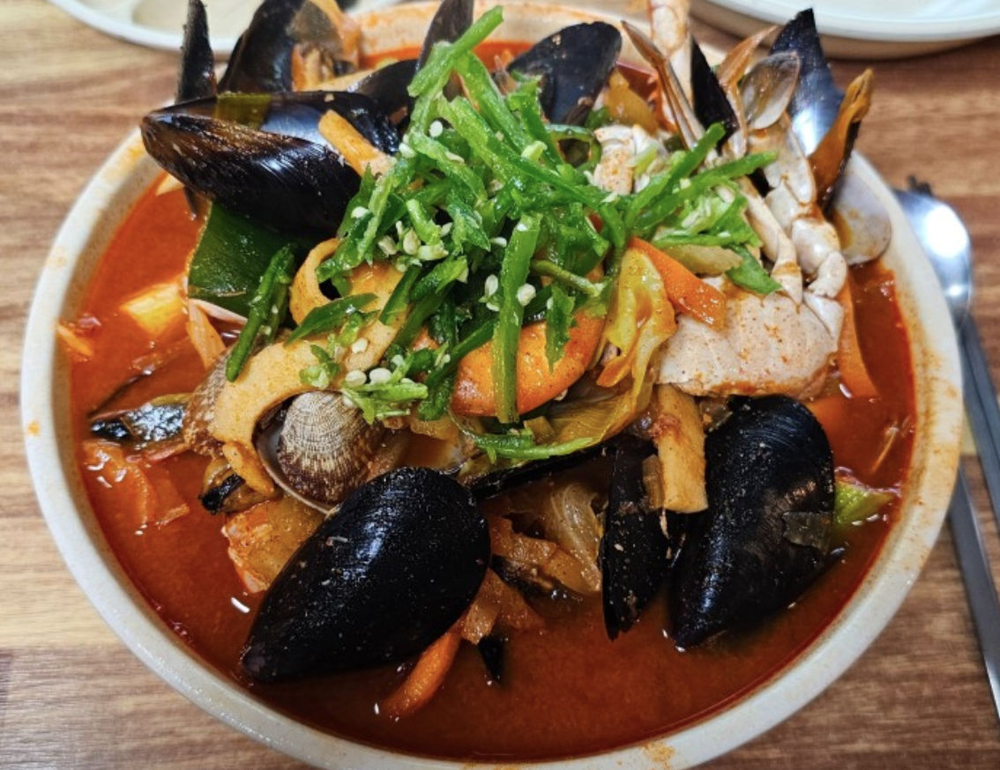
- 수송반점
- 주소 : 전북 군산시 동메3길 23 1층
- Tel : 0507-1355-7843
- 소개 : 지고기와 오징어, 조개, 새우 등의 해산물로 진하게 우려낸 국물을 사용하는 짬뽕과 특유의 소스와 찹쌀로 바삭하게 튀겨나온 탕수육이 이 집의 대표 메뉴이지요.
- 네이버맵평점 : 4.11
- 카카오맵평점 : 3.9
- 바로가기
전라도 주요 일식 맛집
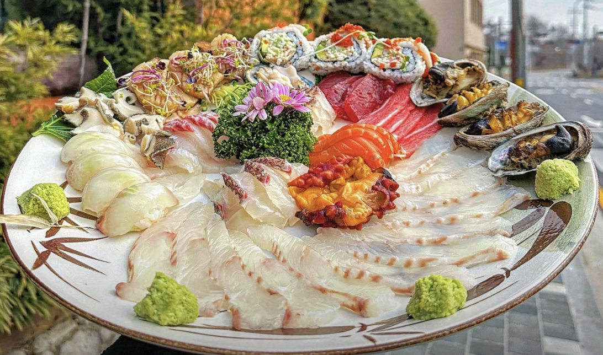
- 오죽
- 주소 : 전북 군산시 한밭로 17
- Tel : 0507-1318-5625
- 소개 : 25년경력 오너쉐프가 운영하는 은파호수공원 앞 일식당, 최선을 다해 정성으로 모시겠습니다. 굴비정식, 대구탕 등 같은 가성비 좋은 다양한 런치(단품)메뉴와 저녁의 다양한 회정식부터 스폐셜(코스),로얄(코스),골드(코스),참치코스까지.. 친절한 서비스로 만족스러운 식사를 대접하겠습니다.
- 네이버맵평점 : 4.54
- 카카오맵평점 : 3.9
- 바로가기
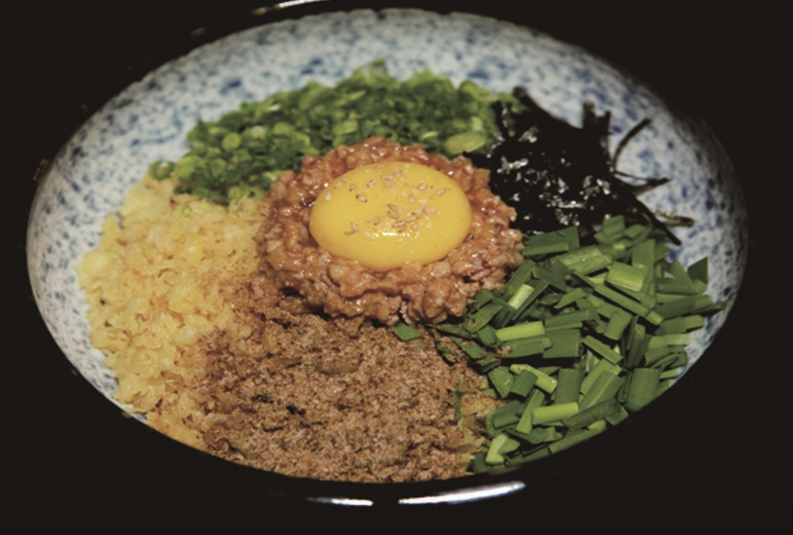
- 세이토
- 주소 : 전북 전주시 완산구 마전중앙로 13 1층 세이토
- Tel : 0507-1354-4322
- 소개 : 1000년의 역사 사누끼우동 X, 세이토 블루리본 서베이 3년 연속 등재, 미식가의 우동집, 타마루 うどん 아카데미 수료, 하림 요리대회 은상 수상, KCIA 한국 소비자 산업평가 우수상
- 네이버맵평점 : 4.58
- 카카오맵평점 : 4.2
- 바로가기
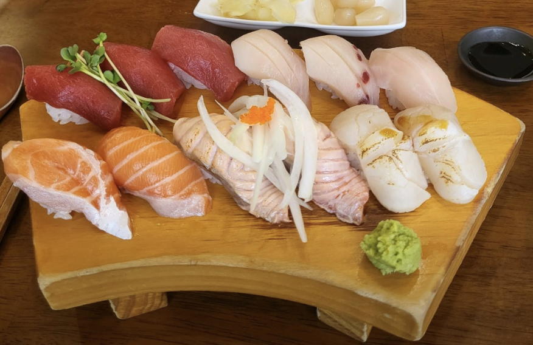
- 가득
- 주소 : 전북 전주시 완산구 현무1길 33 지당빌딩 1층 가득
- Tel : 0507-1333-2159
- 소개 : 정보없음
- 네이버맵평점 : 4.63
- 카카오맵평점 : 4.7
- 바로가기
전라도 주요 분식 맛집
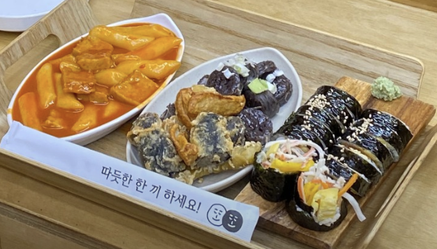
- 또또분식
- 주소 : 전북 전주시 덕진구 삼송3길 14 또또분식
- Tel : 010-4184-7163
- 소개 : 정보없음
- 네이버맵평점 : 4.64
- 카카오맵평점 : 4.2
- 바로가기
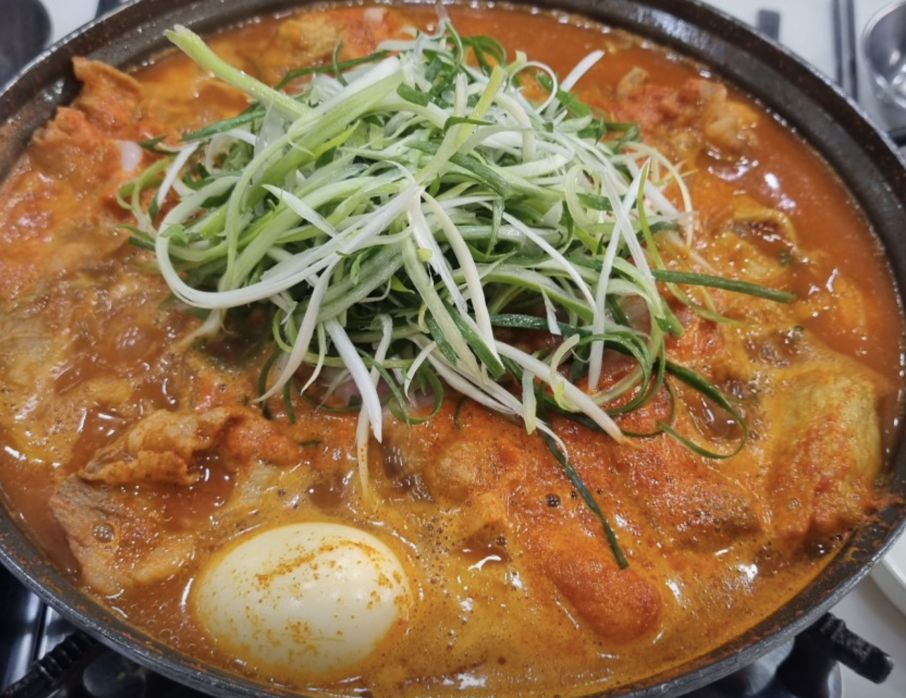
- 모두랑 전북대점
- 주소 : 전북 전주시 덕진구 명륜4길 21-6
- Tel : 063-909-5201
- 소개 : 정보없음
- 네이버맵평점 : 4.56
- 카카오맵평점 : 4.6
- 바로가기
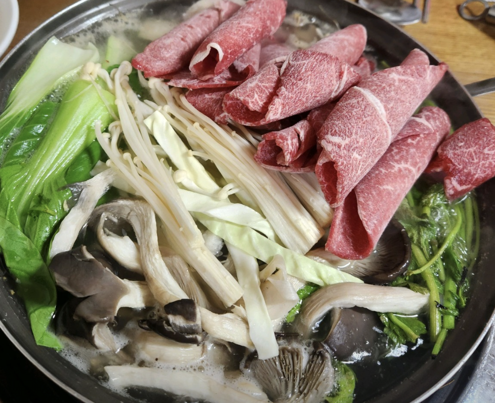
- 싱그랭이
- 주소 : 전북 익산시 춘포면 춘포로 331
- Tel : 063-842-7848
- 소개 : 익산 춘포역 인근에 자리 잡은 칼국수 전문점입니다. 우리밀로 만든 면과 버섯, 미나리 등의 야채를 넣고 상 위에서 얼큰하게 끓여 먹는 칼국수가 대표 메뉴인데요, 식사를 마친 후에는 벽난로와 가마솥이 운치를 더해주는 별채에서 원두커피와 아이스크림을 무료로 즐길 수 있지요. 칼국수는 2인분부터 주문할 수 있으니 참고하세요.
- 네이버맵평점 : 4.48
- 카카오맵평점 : 4.6
- 바로가기